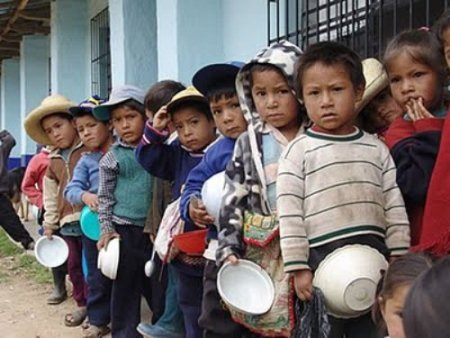

Historia  Nuestro propósito es lograr un adecuado desarrollo físico mental, moral o social de aquellas personitas que serán el futuro de nuestro país El nacimiento de la Fundación RESCATANDO SUEÑOS está marcado por una dolorosa anécdota: En Diciembre de 1973, Jorge Lombana presenció cómo una niña de la calle que se lanzó a recoger la caja de una muñeca caída de un carro, fue atropellada por un camión. Jorge Lombana, quien corrió en vano a auxiliarla, pues la niña falleció en el acto, observó que la caja por la cual dio su vida la pequeña, estaba vacía. Desde entonces, él decidió luchar con todos los medios por la niñez desamparada brindándole atención médica, alimento, afecto y un lugar para vivir. En un contexto social donde los niños de la calle se habían convertido en parte del paisaje urbano, surge la acción de Jorge Lombana como un compromiso individual enmarcado dentro de un esquema asistencial de ayuda a esta población. Este trabajo se inicia en la década del 70 y va siendo alimentado por un grupo de voluntarios, donde lo que prima es una relación de amistad y un sentido de ayuda filantrópico. Como consecuencia de este trabajo, Jorge Lombana decidió organizar una casa para atender a los niños de la calle. De esta forma se constituyó la Fundación , que obtuvo su personería jurídica en 1988, emanada del Instituto Colombiano de Bienestar Familiar. A partir de este momento comenzó un proceso de consolidación y construcción de la institución. Para la década de los 90, se inició una tecnificación y definición del proceso y de los servicios de atención. En el año de 1997 se realizó una reestructuración del área social. El equipo técnico asume para este momento un mayor grado de profesionalismo en busca de optimizar los estándares de calidad en los procesos de atención de los niños. En 1999 la Fundación inició la participación en el "Proyecto de Fortalecimiento, Autoevaluación y Estándares de Calidad", liderado por la UNICEF , ICBF y las Fundaciones Restrepo Barco y FES, con el propósito de cualificar los procesos de protección en las instituciones concebidas para este fin. Los resultados de este proceso se vieron reflejados en una mejor calidad en el servicio ofrecido a los niños y niñas en situación de calle. A finales del año 2000, la Fundación fue evaluada por primera vez bajo los parámetros de dichos estándares de calidad, hecho que le mereció una excelente calificación por parte de los entes organizadores. En el año 2001 se consolidó el trabajo de intervención con familias y la construcción de un Pacto de Convivencia que respondiera a la realidad institucional, bajo una perspectiva de género y de derechos como norte ético de nuestra organización. A finales del año 2005 luego de un arduo proceso de implementación de nuestro Sistema de Gestión de la Calidad , obtuvimos la Certificación ISO 9001:2000 otorgada por el Instituto Colombiano de Normas Técnicas ICONTEC.